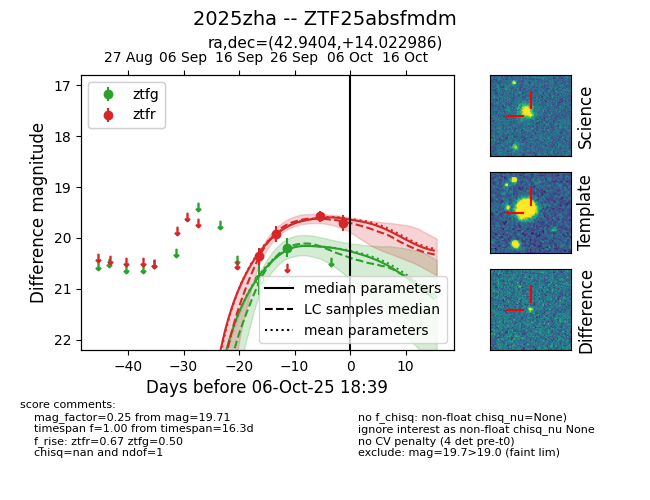
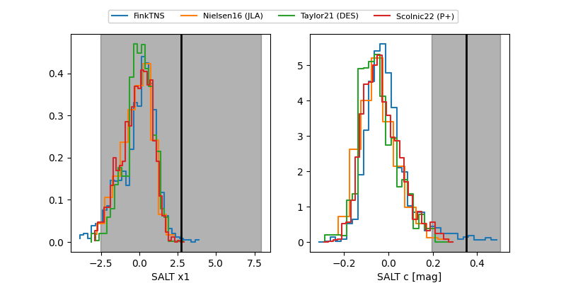

FINK: ZTF25absfmdm
Lasair: ZTF25absfmdm
ALeRCE: ZTF25absfmdm
TNS: 2025zha
YSE: 2025zha
ZTF25absfmdm (ztf,fink)
2025zha (tns,yse)
equatorial (ra, dec) = (42.9404,+14.02299)
galactic (l, b) = (162.0276,-39.54489)


last ztfg=20.19, ztfr=19.71
1 ztfg, 4 ztfr detections